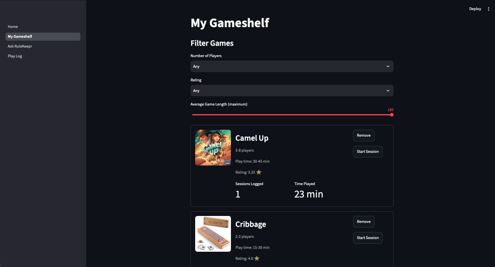
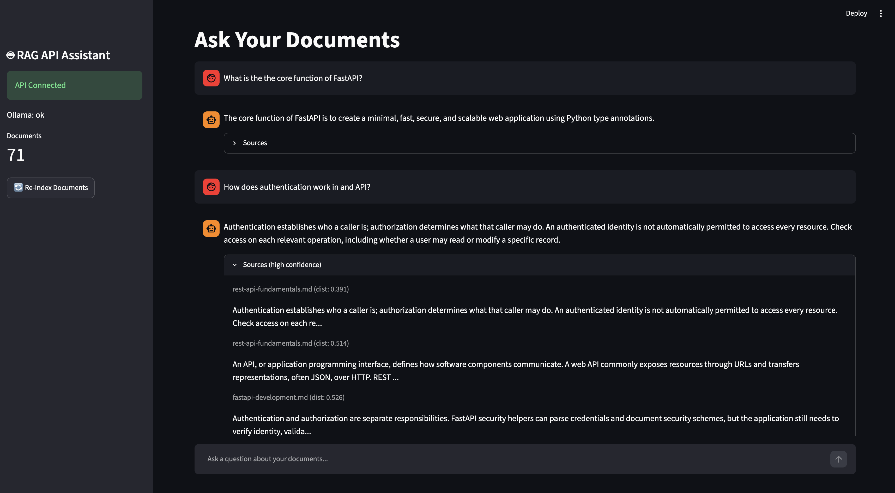
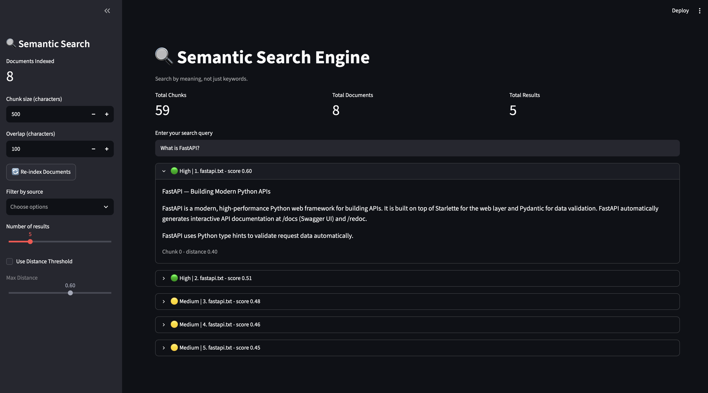

RuleKeepr
- Board-game companion that answers rules questions mid-game,
with each answer linked to its supporting rulebook sources and a
question history for every session. Users can build a game
shelf, track play sessions and time played, and see their
most-played games
- Built a containerized FastAPI backend with authenticated
endpoints, a tested API, a Streamlit frontend, and a local LLM
served through Ollama. Tuned semantic search parameters (chunk
size, max distance, thresholds) to produce reliable, consistent
answers
Learn More

RAG API Assistant
- Streamlit chat app for asking questions about your own
documents, backed by a FastAPI RAG service powered by Ollama. It
includes source citations, a status sidebar, a re-indexing
button, and error handling.
- Integrated a RAG pipeline into a Streamlit frontend, worked
through the limitations of that setup, and wrote tests to check
system health and catch errors
Learn More

Semantic Search Engine
- Semantic search tool that splits documents into overlapping
chunks, embeds them with all-MiniLM-L6-v2, stores them in a
persistent ChromaDB collection, and returns the most relevant
results ranked by cosine distance through a Streamlit interface
- Wrote an evaluation script to measure search quality and ran a
chunking experiment comparing chunk sizes, building a practical
understanding of how embeddings and retrieval settings affect
accuracy
Learn More